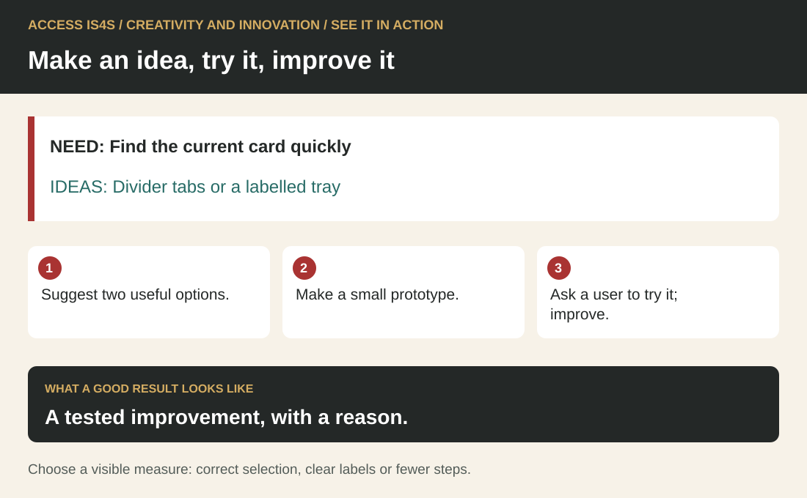

Teaching Creativity and Innovation: develop an idea through use and feedback
Creativity can begin with an ordinary difficulty: a label is unclear, materials are hard to find or a schedule does not answer a reader's question. Innovation involves putting an idea into use and learning from the result. Teach learners to notice an opportunity, generate alternatives, develop a small version, test it and revise. A polished object alone cannot show that process.
The learner chapter uses a fictional practice-card shelf. Learners can change labels, organization and classroom checking steps using simple materials. The setting allows useful experimentation without changing equipment procedures or drawing on protected knowledge. In an ACCESS IS4S classroom, welcome varied ways of making and explaining while leaving ownership with the learner. No one needs to produce a cultural design or disclose personal knowledge to demonstrate creativity.
See it in action · Creativity and innovation

Read the visual description
NEED: Find the current card quickly. IDEAS: Divider tabs or a labelled tray. Suggest two useful options. Make a small prototype. Ask a user to try it; improve. A tested improvement, with a reason. Choose a visible measure: correct selection, clear labels or fewer steps.
This small fictional example shows the skill in use. NEED: Find the current card quickly. IDEAS: Divider tabs or a labelled tray.
Try it: Suggest two useful options. Make a small prototype. Ask a user to try it; improve.
Check your result: A tested improvement, with a reason. Choose a visible measure: correct selection, clear labels or fewer steps.
Make all six components visible

Read the visual description
An original task illustration occupies the left panel; six numbered actions appear on the right. Make ideas usable. Learn from the trial. Six connected components: Use imagination and curiosity; Find opportunities to innovate; Generate new ideas; Develop your ideas; Apply your ideas; Make room for creativity. Revisit the component that helps the task.
Teach imagination and curiosity; identifying opportunities; generating ideas novel to oneself or others; developing ideas; applying ideas; and facilitating a creative environment. Creativity does not require a world-first invention. An idea can be new to a learner or useful in a particular setting. Teach its value through the task it helps someone perform.
Observe a user’s task and define a useful improvement. Generate alternatives, compare features and make a small prototype. Let a user try it, record what happens and revise only what the evidence supports. Finish with a reasoned decision to keep or change the design and a plan for another real trial.
Connect creativity with a real purpose
Use practical applications and visible products. Begin by asking whose task could become easier. The shelf case supplies waiting-time observations but does not establish their cause. Have learners separate what they know from what they would need to ask or observe. A design question should leave room for alternatives rather than hide a preferred solution inside its wording.
“Define the useful change” asks, “How could we help a learner…” A useful completion might focus on finding and checking the Number Check kit without remembering its contents. “Make everyone use a better folder” selects a tool too early. Compare these questions and ask what each allows the learner to investigate. Use fictional viewpoints in “Ask from another viewpoint” so that nobody must represent a disability, identity or entire community.
Keep a visible brief with requirements: accurate contents, plain language, black-and-white usability, no personal data and manageable updating. A striking design that ignores those conditions is not ready to use. Constraints can help learners make choices, provided the limits are explicit and leave meaningful room to think.
Separate idea generation from selection

Read the visual description
Three original prototypes show a labelled Number Check folder, a matching board with data, example and two blank-sheet spaces, and a return tray with N and C kits and a named helper-reset action. Questions ask whether a new user can find instructions, whether cards fit and stay together, and who checks and resets the tray. These are options to test.
Teach a structured creative problem-solving process. Allow a period of divergent thinking before comparing options. Learners can sketch, speak, write, arrange materials or use an accessible tool. Ask for genuinely different approaches, such as a contents-list folder, matching board and return tray, rather than three colours of the same design.
During generation, invite clarifying questions and possible extensions. During selection, compare ideas against the brief and investigate uncertainties. “No criticism” is a temporary protection for early possibilities, not a ban on checking facts or feasibility. Teach the change between phases explicitly. A table can help organize criteria, but guessed scores do not make a decision objective. Label predictions, and revisit them after a test.
Use “Help another idea develop” to practise supporting another person's unfinished idea. The listener asks a question and offers an extension; the author decides what to use. Credit the contribution with permission. This routine helps prevent a confident partner from taking over the work while believing they are helping.
A worked teaching example: a testable contents system

Read the visual description
Two Number Check folders show an inspectable revision. Version 1 has four items: one data card, one worked example and two blank sheets. Version 2 has five: one data card, two worked examples and two blanks. A further check must make the slip instruction visible and retest; used sheets stay with the learner and two blank sheets are restocked.
Use the Number Check kit. Version 1 contains one data table, one worked example and two blank record sheets: four items. Model a large folder label, a contents list and a “check needed” slip. State the intended user action: find the kit, check its contents and report a missing item. This creates a small prototype that can be tested before investing in a finished design.
The fictional test record says a user finds the folder and counts the items, but misses the slip instruction because it is on the reverse. Another user asks what to do with used sheets. Model three columns: observation, possible explanation and next check. Do not write “the user did not pay attention.” The design has hidden information and an unanswered process question.
The instructor clarifies that used sheets stay with the learner and two blanks are restocked. The kit also gains a second worked example, bringing it to five items. In “Revise for the changed kit”, revise the visible instruction, mark the slip location, update the contents and identify Version 2. Ask why each change is needed. In “Retest and make a limited claim”, retest with a willing user and record support. A successful small test supports a limited claim about that trial, not a promise that the system works for everyone.
Build an environment where ideas can develop
Build a supportive and inclusive creative environment. Provide time, materials, accessible participation routes and permission to offer an unfinished thought. Make feedback specific to the purpose. Ask what the author intended before recommending a change. Keep accurate source information fixed while allowing different ways to present it.
Discuss ownership before photographing, displaying, publishing or combining work. Learners may choose to keep an idea private. Nation-specific knowledge, imagery and teachings require guidance from the appropriate rights holders; a general invitation to be creative does not supply permission. “Transfer the process with boundaries” makes these boundaries part of transfer to a fictional community-room or workplace task. The instructor should model asking whose approval a real change would require.
Assess process, product and contribution
Gather varied evidence and invite reflection. Keep the design question, alternatives, comparison, prototype, test notes and revision. Assess whether the learner explored possibilities, developed details, used evidence and supported others. Fluency, flexibility, originality and elaboration can prompt discussion, but classroom observations are not standardized creativity-test scores. Avoid grading drawing polish, cultural expression or the number of ideas alone.
Increase complexity through more user needs, changing requirements, less obvious opportunities or a wider set of constraints. Offer a partially completed prototype or one-kit starting point when needed. Record the support and use another task to see what transfers. A plan for future use is valuable but remains a plan until an actual application is observed.
Use “Generate three different options”; “Facilitate a short idea session” for brainstorming and facilitation, the shelf sequence for an open problem and prototype, and “Assemble your idea-development record” for a development portfolio. Collect the question, alternatives, test notes and changes. Share a portfolio only by agreement; a learner can demonstrate the creative process without public display.
Classroom exercise: make a clearer practice return point
Supply this fictional design brief: A classroom has two return trays, one for blank practice cards and one for used practice cards. Both trays currently say “Cards.” A first-time user should be able to choose a tray without colour alone. You may use two sheets of plain paper, a pen and removable tape. Do not change the room layout or attach anything permanently.
Ask learners to generate at least two different approaches before choosing one. Possibilities include clear word labels, a word-and-example card, or a short question above each tray. Compare approaches against the brief. The aim is a usable idea with a reason, not decorative polish or the largest number of sketches.
Have each learner create one small version. Ask a willing partner to place one blank and one used practice card, without the designer directing the choice. Agree any access tools first. Record what the user did and any clarification needed. The designer may explain afterwards; help given during the attempt changes what the test shows.
Answer guidance. “Blank cards — ready to use” and “Used cards — return here” with readable placement is one valid design. A labelled example may also work. “Green” and “red” alone does not meet the colour-independent condition. A design that requires moving furniture exceeds the brief. There is no single required visual arrangement: a defensible answer shows alternatives, a reasoned selection and an observed check.
Give this changed requirement after the first test: some used cards may be written on only one side, but they still belong in the used tray until checked. Ask the learner to decide whether the current design handles that case. A useful revision might add “Any writing? Put it here” to the used tray. Retaining a design is also valid if its wording already communicates the condition and a new test supports that decision.
Keep the first idea, selected version, user observation and retained or revised design. A small successful test supports a claim about that attempt, not every future user. The final reflection should name a design decision and its evidence, plus one question worth testing next.
Creativity and Innovation route card
Practise in four steps
- Observe what a user needs to do. State one useful improvement.
- Generate different options, compare them and make a small usable version.
- Let a partner try it. Record what they actually do and any help they need.
- Keep or revise a feature for a stated reason. Give useful feedback without taking over another person’s design.
Support route. Use plain words, movable cards, a spoken specification or a learner-directed scribe. Start with one visible need and practise two approaches before the fuller three-option attempt. A model can support learning; record when it was available and do not call the copied solution independent idea generation. Ask a willing partner or the instructor to be the user. No artistic quality, cultural motif or personal story is required.
Retry route. Change one feature in response to actual evidence, or retain an effective feature with a reason. Try the held status-change card and matching user request. Separate help to the designer from prompts to the user. A repeat with a familiar user shows that repeat under those conditions; it does not establish first-use accessibility or usefulness for everyone. If a truly new user is needed, arrange one rather than claiming a familiar partner is new.
What the instructor observes. Keep the options, prototype, trial observations and reason for the next version. A plan for later use needs a later observation.
Next-attempt agreement: user task ; design decision ; authoring support ; user/role and prior familiarity ; trial prompts ; change/keep reason ; observer/booking ; limit of conclusion .
Creativity and innovation practice C · Design a clear choose-and-check display
These four original cases give you another opportunity to use a skill after the chapter practice. All people, rooms, events and organizations in these cards are fictional. You can use these cases without sharing personal, family, community or cultural knowledge. They are classroom tasks, not instructions for operating equipment or following an actual workplace procedure.
Your instructor will give you the relevant card when your turn begins. Keep a sender's information separate from the receiver's card until after the exchange. If you have already read the information, say so: the activity remains useful practice, but that attempt cannot show how you receive an unfamiliar message. No one needs to conceal prior practice.
Agree your language, communication mode, tools, access supports and response time before beginning. Speech, sign, text, AAC, a learner-directed scribe and agreed interpretation can be appropriate. The person observing needs a reliable way to understand the meaning of your contribution. Receiving a message in writing shows reception through that mode; it does not automatically show auditory listening. You may decline audio/video recording and use live observation. Ask for a pause or another opportunity if the conditions are not usable. There is no requirement to look cheerful, make eye contact or disclose why you need an arrangement.
Purpose: develop and test a small information design. Artistic polish is not the goal. The design should help someone make a correct choice from the supplied fictional facts.
“Creativity and innovation practice C · Design a clear choose-and-check display” design brief and source cards
A practice shelf has three classroom packs. Users need to check what is ready before choosing. Make a tabletop paper prototype; a screen version is optional if available. Use only these facts:
If needed, scroll across this table. Keyboard: focus the table, then use the arrow keys.
| Pack | Current status | What a user may do |
|---|---|---|
| MAP | Ready | Select it for the classroom activity. |
| WORD | Being checked | Leave it in place; ask the instructor when it will be ready. |
| NUMBER | Ready | Select it for the classroom activity. |
The prototype must name all three packs, make each status and next action understandable, and identify itself as classroom practice. It must work without colour as the only status signal. It must not collect names, photographs, cultural knowledge or personal reasons for choosing a pack. Available materials are plain paper, six blank cards, a marker or pencil and removable tape. A learner-directed scribe may prepare the marks you specify. Use descriptive words or simple original shapes; no cultural imagery is required.
Before choosing a design, ask a useful question about the user's task and record at least three different possible approaches. Differences must change how information is found or used, not just the colour. Select one approach with a reason tied to the brief. Make a usable small prototype. Keep a sketch or note of the other options; a finished attractive product alone does not show idea generation.
“Creativity and innovation practice C · Design a clear choose-and-check display” user card · Give to a willing test partner
You want the WORD pack first. If it is not ready, you would use the MAP pack today and ask the instructor about WORD. Using the prototype, identify your first-choice pack's status, say what you will do next and locate the pack you can use today. Explain one point that helped or confused you. Do not pretend to misunderstand a clear display, and do not praise it just to be polite. You can decline or stop the user role; the instructor can take the role or arrange another partner.
“Creativity and innovation practice C · Design a clear choose-and-check display” test and revision
Tell the user the task and agree how they will give feedback. During the first trial, observe rather than coaching the answer. If the user asks for help, you may provide it, but record the actual prompt and treat the trial as supported at that point. A person's support need is not a fault in them. Note whether the display itself made the required information available in the agreed mode.
Ask permission before marking or changing someone else's contribution. Identify a useful change from the trial, make it, and repeat the task. If no change is needed, retain the prototype and explain the evidence from the check. A repeat with the same user is a familiar-task retest; it is not an independent first-use trial with a new person. State what this trial supports and what it cannot establish.
When you take the user role for a partner's design, offer one concrete observation and leave the design decision with its author. Each learner needs a design turn and an opportunity to give feedback. A peer's successful use of your display does not prove you developed it without support.
“Creativity and innovation practice C · Design a clear choose-and-check display” later change card · Hold for a later design attempt
The fictional status changes: WORD is now Ready; MAP is now Being checked; NUMBER remains Ready. The next user's first choice is MAP, with NUMBER as their acceptable alternative. The action for a pack being checked remains “leave it in place and ask the instructor.” Update the prototype, verify all three statuses, and test with this task. If the same person already knows the earlier display, record that familiarity. This is a bounded application in a changed classroom task, not evidence of effectiveness across workplaces or communities.
Creativity and innovation practice C · Design a clear choose-and-check display
The initial display must preserve MAP Ready, WORD Being checked, NUMBER Ready. The first user's correct route is to leave WORD, choose MAP for today and ask the instructor about WORD. In the later change, MAP Being checked, WORD Ready, NUMBER Ready; the new first choice is MAP and the allowed alternative is NUMBER. The corresponding route is to leave MAP, choose NUMBER and ask the instructor about MAP. This is the permitted fictional task, not an actual booking policy.
There is no single required layout. Three distinct options might be a separate labelled card at each pack, a central status/action board, or a fold-out decision path with words and symbols. Merely changing three colours is not three meaningfully different approaches. None of these model options should be supplied before an independent idea-generation attempt. Text, original simple shapes and learner-directed marks are all acceptable; beauty and cultural symbolism are not criteria.
“Creativity and innovation practice C · Design a clear choose-and-check display”.1 · Imagination and curiosity
Learner asks a useful user-task question and explores a possibility before settling.
Practise with: Do not infer curiosity from enthusiasm or a finished artifact.
“Creativity and innovation practice C · Design a clear choose-and-check display”.2 · Identify innovation opportunities
Learner specifies a useful information change tied to choosing a ready pack.
Practise with: Inventing a real community need or a personal deficit is unnecessary.
“Creativity and innovation practice C · Design a clear choose-and-check display”.3 · Generate ideas
Learner supplies at least three different information approaches and explains a difference.
Practise with: Record if the instructor supplied an option; novelty here means new to this attempt/person, not globally original.
“Creativity and innovation practice C · Design a clear choose-and-check display”.4 · Develop ideas
Learner selects using the brief and makes a usable prototype containing the required statuses/actions.
Practise with: A scribe making learner-directed marks is different from another person designing the system.
“Creativity and innovation practice C · Design a clear choose-and-check display”.5 · Apply ideas
Learner runs a bounded trial, records actual user actions/prompts, responds to the evidence and retests or confirms.
Practise with: Separate help to the designer from help to the user; record familiarity and avoid claims about all users.
“Creativity and innovation practice C · Design a clear choose-and-check display”.6 · Facilitate a creative environment
Learner invites feedback, checks before changing another person's work and gives a partner a concrete observation while leaving ownership with them.
Practise with: Taking over a partner's prototype does not demonstrate support for their authorship.
Fictional moderation example, two support records. A designer prepares the display with an instructor prompt to add the missing WORD status. The test user then correctly selects MAP without a prompt. Record designer support on development, and an unprompted user result under the trial conditions; the user's success does not erase the designer's prompt or establish independent evidence for all six components. In a different trial the designer independently develops the display but tells the user “choose MAP” during the test: record the user's prompted outcome, not independent first-use success. The designer may still show useful application by noticing that the test was coached, stating the limit and planning another fair trial. This same distinction applies to original “Retest and make a limited claim”.
“Creativity and innovation practice C · Design a clear choose-and-check display” trial record · Keep the two kinds of help separate
| Field | Record |
|---|---|
| Prototype | Learner code, version, approach and authoring support. |
| User conditions | Willing user code/role; task card; prior familiarity; agreed mode; routine access arrangement. |
| Designer assistance | Exact idea, wording or construction help given to the learner-designer and by whom. |
| User assistance | Exact prompt/help during the user task and when it happened; or none observed. |
| Result | What the user selected, said or did; where confusion occurred; no invented success. |
| Response | Change made or evidence-based reason to retain; next trial and its familiarity limit. |